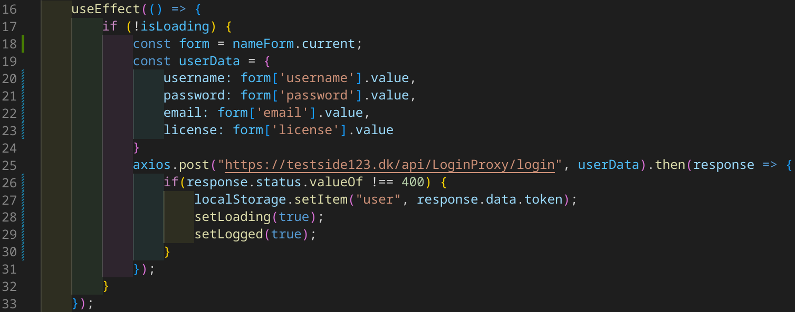

useEffect har nok fikset det største problem mit React projekt har haft, indtil videre. Jeg har en login side, som tager 2 input; email og password. Når man trykker på logind knappen, skal siden sende data'en til min microservice, som derefter sender en JWT token tilbage. Du bliver derefter redirected til en privat side, hvor du kan se dine informationer.
Eller, det er hvad der skulle ske. Men jeg skal trykke to gange før at jeg kan logge ind. Dette fænomen opstår også på registreringssiden. Jeg er faktisk ikke helt sikker på hvorfor det sker, da ens JWT token bliver gemt, og der bliver tjekket efter den token. Så når man trykker den anden gang, vil den token blive registreret.
For at fikse dette problem, valgte jeg at genskrive hele logikken til logind siden. Set på billedet nedenunder, linje
16 bruger vi useEffect() hook. Det er en React hook, som lader ens kode synkronisere komponenter
mellem eksterne systemer. Nogle af de eksterne systemer kunne være at hente eller sende data til et API. Vi giver
den en funktion som første argument. I funktionen laver vi et check på linje 17 om vi er i gang med at loade data fra
min microservice.
Når vi trykker på logind knappen, bliver isLoading = false, hvilket gør, at vi kan køre videre ned i funktionen.
Jeg har inkapslet nogle inputfelter i en form. Og det er først når vi isLoading = false, at vi kan bruge
dataen fra formen. På linje 19 laver vi et bruger objekt, som består af den data, der skal sendes til microservicen.
på linje 25 laver vi vores POST request, hvor det første argument er URL'et til den API, som vi skal sende requesten til.
Det anded argument er den data, som bliver sendt.
.then() er en metode, som bliver kørt lige så snart at vi får dataen fra API'et, tilbage. Det er her vi sætter
en item i local storage. Det er den token, som vi bruger til at verificere, om man er logget ind eller ej. på linje 26
tjekker vi om det svar vi får tilbage, har en statuskode 400. Hvis vi får statuskode 400, så er der gået noget galt.
Git commit relevant til denne blogpost
